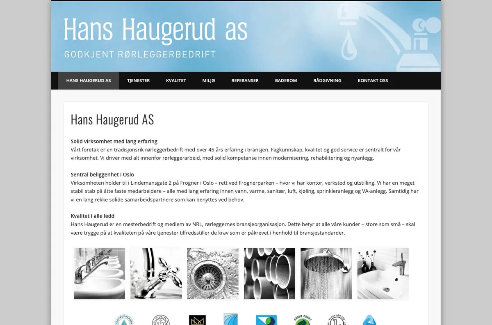
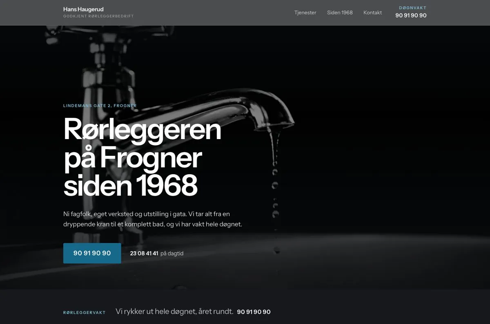
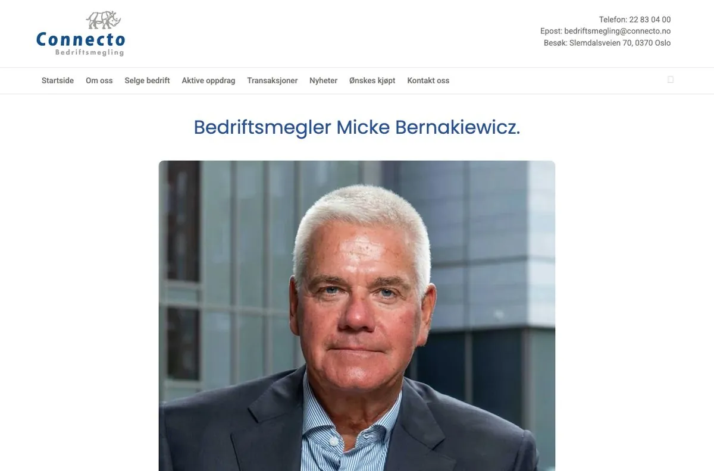
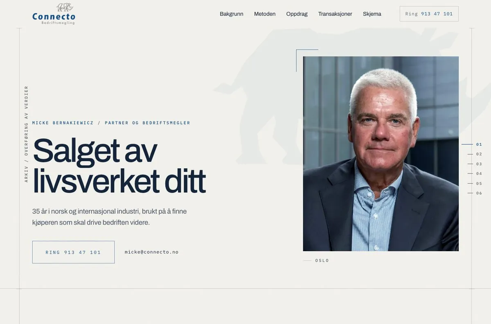
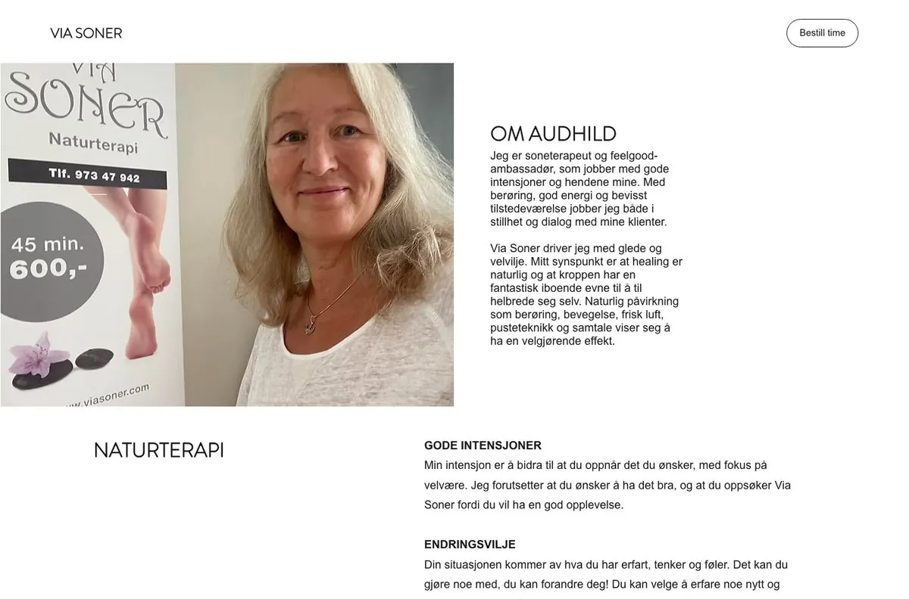
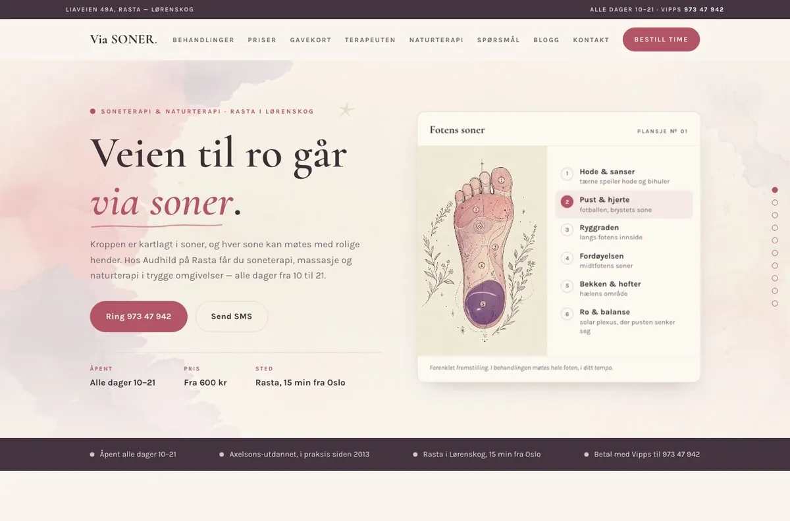
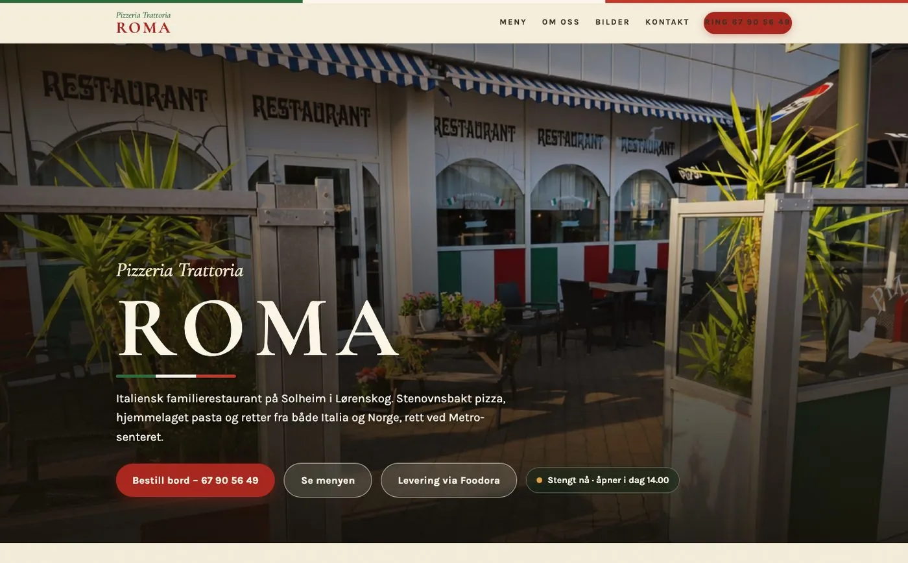

Hans Haugerud AS
Døgnvakten fikk plass i toppen. Godkjenningene fikk rom. Det eksisterende uttrykket med krom og vann ble beholdt, men gjort større og klarere.
Åpne utkastetNettsider for norske småbedrifter
Vi gjør det tydeligere hvorfor folk skal velge dere.Se forskjellen i fire ekte designforslag før du leser et eneste løfte.
Se arbeidet↓

Hans Haugerud AS dra i linjen
Fire designforslag. Samme bedrift, samme fakta, men en nettside med en tydeligere jobb å gjøre. Rull, og se den gamle siden bli den nye.
Døgnvakten fikk plass i toppen. Godkjenningene fikk rom. Det eksisterende uttrykket med krom og vann ble beholdt, men gjort større og klarere.
Åpne utkastet



Behandlingene fikk egne rom. Egenart og timebestilling ble enklere å finne. Bildene som allerede tilhørte virksomheten fikk bære mer av fortellingen.
Åpne utkastet
Det folk leter etter, øverst.
Meny, bordbestilling og åpningstider er innholdet som må fungere når noen velger hvor de skal spise.
Bygget rundt restaurantens eget lokale, egen mat og egen informasjon.
Åpne utkastetDu får se en ferdig, klikkbar side før du trenger å bestemme deg.
Ingenting blir funnet på. Ingen kundeuttalelser, stjerner eller tall som ikke kan dokumenteres.
Dere eier filene. Ren HTML og CSS, uten en plattform dere blir sittende fast i.
Nettsiden, teksten, bildene, logoen og det som står om dere i Enhetsregisteret.
En ferdig side, ikke en skisse. Dere kan klikke rundt før dere bestemmer noe.
Tekst, bilder og rekkefølge. Alt som står på siden skal dere kjenne dere igjen i.
På deres eget domene. Dere eier filene, uten database eller plattformbinding.
Dere snakker med den som bygger siden. Vi gjør alt selv, fra første samtale til siden er ute.
Send navnet på bedriften. Vi ser på dagens side og sier ærlig om det er noe å hente.
Før publisering
Kontaktopplysningene fylles inn før denne siden går live.
E-post, telefon, organisasjonsnummer og postadresse er bevisst ikke gjettet her.